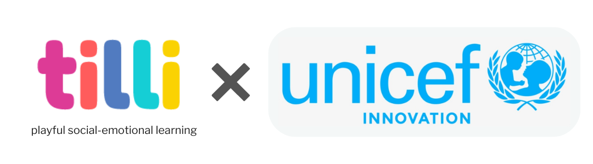
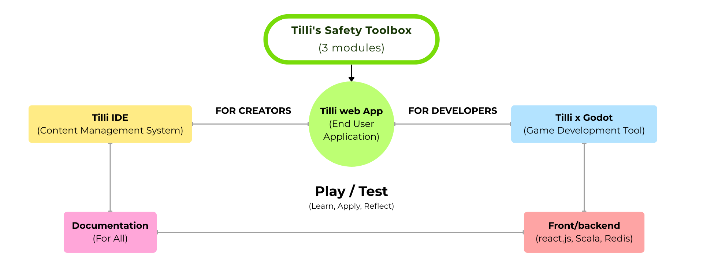
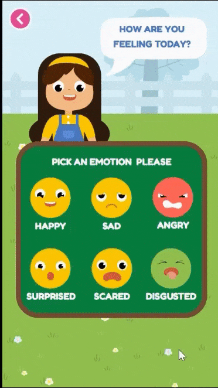
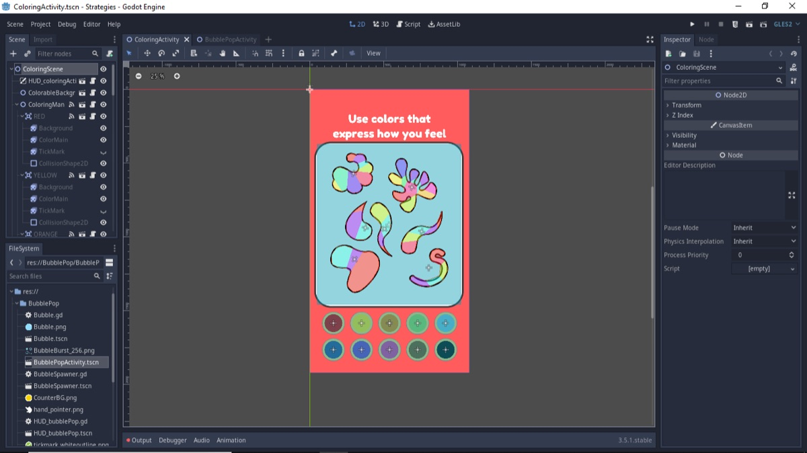

Tilli's Safety Toolbox!

We’re currently working with the UNICEF Innovation Fund to create Tilli's Safety Toolbox. It is a three module, play-based learning experience on Social-Emotional Learning for Child Online Safety. The focus of this project is to help parents and caregivers have meaningful conversations with their children and teachers, educators and social workers deliver powerful learning to their students!
Ownership: The content, frameworks, graphics and trademark is owned by Tilli Kids Inc, as an open source tool,
our parameters for fair use is outlined within the project charter.
© 2021 Tilli Kids Inc. All Rights Reserved.
Term of Service linked here: Link

This project is open source because we believe in building things together and letting people benefit from and adapt things rather than everybody reinventing their own wheel. Tilli uses games and storytelling to help parents and teachers facilitate fun conversations about life changing topics.
In order to build great content for children’s social wellbeing we rely on anybody willing to contribute. In fact Tilli encourages volunteers to drive this project! So whether you want to extend our code for your own use case or just help out - we welcome any contributions to make this project better and safer!
1. Tilli Web App
Tilli Safety Tool Box comprises of 3 modules:
- Module 1: Feelings and Emotions (Launched)
- Learn to identify, label and express emotions and feelings
- Develop healthy coping strategies to manage big feelings
- Module 2: Trust (Launched)
- At the core of staying safe is knowing who and what to trust
- Understand what trust means, looks, and feels like
- Practice tools like the trust circle to make safer choices
- Module 3: Digital Safety (WIP)
- Understanding internet safety and developing positive habits around safe sharing, noticing red flags, being kind and reaching out to a trusted adult
Our 3 modules (and even the modules you create) can be accessed with a Web browser over the World Wide Web on any mobile device.
Unlike classical game software, browser-based games can be played instantly and do not require a prior installation!

2. Tilli IDE
The IDE (Integrated Development Environment) helps users create, manage, and modify content on the Tilli Web App without the need for specialized technical knowledge.
In simple terms this tool helps you build more modules without needing to write all the code from scratch (or even know how to code at all).
3. Tilli x Godot

Tilli uses the open-source Godot Engine to power the interactive modules on our web app. Godot makes it possible to design rich, game-like learning experiences using a visual editor — without needing to write every line of code.
With this integration, anyone can build, customize, and manage new Tilli modules quickly and easily. You don’t need to be a programmer — just focus on the experience you want to create, and Godot takes care of the technical heavy lifting behind the scenes.
Tilli Project Charter
This documentation website is dedicated to Parents, Teachers, Social Workers, Designers and Developers who want to create their own Social Emotional Learning/ Safety Modules using our software and open to use content.
This is maintained by the Tilli Team directly inside the project repository.
Github Project
This guide is intended for software developers who are familiar with how web applications are built.
Go to Github